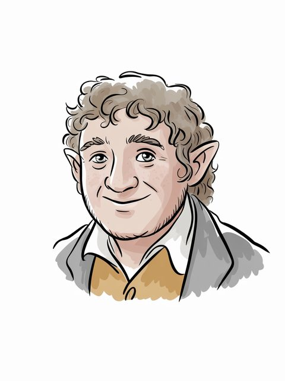

Largo Baggins
Baggins
Baggins (S.R. 1220–S.R. 1312)
Open the full record in the living archive →Part of the Arda Archive — a corpus-first index of Tolkien's legendarium; every fact cited, every silence declared.
Baggins

Baggins
Baggins of the Shirea
S.R. 1220–S.R. 1312b
GENERATED. Ideogram V3, driven by a prompt written in this archive; no illustrator drew it and it must never be presented as though one had. Ruling 3 asks for the hand and this IS the hand -- 'generated' is an answer, 'unknown' would not be.c
“Largo, Longo, Fosco, Dora, replacing Longo, Tango, Largo, Togo, Semolina respectively,”d
“Largo Baggins – The third son of Balbo Baggins and the greatgrandfather”e
“TANTA BAGGINS (f l. TA 29th Cent.) Hobbit of the Shire, wife of Largo”f
The name stands in 15 cited lines, in 9 of the corpus's 192 texts — most often in The Return of the Shadow (3), Index (2), The Complete Guide to Middle Earth (2).g
7 cited lines stand in 3 volumes of the drafts and 4 in 3 of the published books — the record thinned as Tolkien revised.h
Barrow-downs (1).i
The Shire (1).j
a The text — LotR App C (Hobbit trees) [C]
b The text — [I-H]
c The ruling — the owner's ruling of 13 August 2026, on the 552 generated images: 'we are free to use them'. That settles the LICENCE and does not settle the HAND, which is recorded above as what it is. [C]
d The text — The Peoples of Middle Earth · l.3360 [C]
e The text — The Complete Tolkien Companion · l.12106 [EXT]
f The text — The Complete Guide to Middle Earth · l.14728 [EXT]
g Counted — site/arda_apparatus.json [C]
h Counted — site/arda_apparatus.json [C]
i Counted — site/arda_apparatus.json [C]
j Counted — site/arda_apparatus.json [C]

“In each direction; yielding words for wide and long. [Cf. Sp. largo = long.] 3anda” — the name is near this line and the archive does not assert that it is this record.k
of Baggins; in the Shire; child of Balbo Baggins, Berylla Boffin; wedded to Tanta Hornblower; father or mother of Fosco Baggins; S.R. 1220–S.R. 1312.l

Balbo Baggins (2), Mungo Baggins (2), Drogo Baggins (1), Fosco Baggins (1) — a shared line is a fact about the line, not a claim that the two met.m
counted from corpus lines that name BOTH records. A shared line is a fact about the line, not a claim that the two met; `eg` names a line a reader can open. [C]
a marginal hand recording a change to this record — searched over 59 verified notes in site/arda_hands.json, and nothing was found.n
recorded by-names for this figure — searched over 47 worked sets in site/arda_epithets.json, and nothing was found.o
k The line — Vinyar Tengwar 41 50 · l.12557 [C]
l The table — LotR App C (Hobbit trees) [C]
m Counted — site/arda_apparatus.json [C]
n The search — site/arda_apparatus.json [C]
o The search — site/arda_apparatus.json [C]

Baggins (S.R. 1220–S.R. 1312)
Open the full record in the living archive →